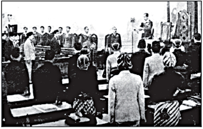

Sejarah BPUPKI: Latar Belakang, Tujuan, Anggota dan Sidangnya

BPUPKI atau sebuah badan penyelidik yang bertugas untuk mempersiapkan kemerdekaan Indonesia, memang sangatlah berperan penting. Tanpa BPUPKI, panitia sembilan, piagam Jakarta, bahkan PPKI, mungkin tidak akan pernah terbentuk. Seperti apa sejarah dan tugas dari BPUPKI? Berikut penjelasannya.
Penjajahan dari sejumlah negara yang terjadi di Indonesia memang membawa dampak yang sangat buruk terhadap Indonesia, sehingga masing-masing daerah mulai melakukan perlawanan. Misalnya, Pattimura yang memperjuangkan kawasan Maluku pada tahun 1817, Perang Padri yang dilakukan oleh kawasan Sumatra Barat yang digerakkan oleh pahlawan Tuanku Imam Bonjol, dan Pangeran Diponegoro dari Jawa Tengah pada tahun 1825-1830.
Masih banyak perlawanan lainnya yang dilakukan, tetapi sebagian besar tidak membuahkan banyak hasil. Banyak yang menderita, ditangkap, diasingkan, dihukum, bahkan gugur. Itu sebabnya di awal abad ke-20, perlawanan sifatnya sudah berupa organisatoris-nasional, bukan lagi kedaerahan.
Rakyat sudah mulai memiliki kesadaran nasional. Budi Utomo yang memimpinnya pada tahun 20 Mei 1908. Niat dan semangatnya didorong oleh dokter senior, yakni Dokter Wahidin Sudirohusodo. Usaha yang dilakukan Budi Utomo antara lain adalah memajukan berbagai bidang maupun sektor untuk memenuhi kebutuhan masyarakat.
Organisasi lainnya ternyata ikut mendukung dan memberikan pencerahan, seperti Sarekat Islam (1912), Indische Partij (1912), Perhimpunan Indonesia (1908), Partai Nasional Indonesia (1927), dan Gerindo (1937).
Ada pula organisasi non-politik yang ikut berdiri, seperti Muhammadiyah, NU, dan Taman Siswa. Organisasi tersebut bertujuan baik dan memberikan pendidikan untuk murid-muridnya.
Sejarah yang telah berlalu panjang dan memerlukan banyak pengorbanan menggerakkan Indonesia untuk membebaskan diri dari kolonial. Pada tahun 1928, pemuda mulai bersama-sama bersatu dan memiliki ikrar.
Namun, tentara Jepang datang setelah penjajahan selama 3,5 abad yang dilalui Indonesia sudah cukup menyiksa. Negeri merah-putih tentunya tidak diam saja dan mulai bekerja sama dalam kedua sidang, yakni BPUPKI dan PPKI.
Latar Belakang BPUPKI
Jepang memiliki cita-cita untuk membangun sebuah kawasan persemakmuran bersama Asia Timur Raya, tetapi masih menurut kekuasaannya. Ketika dicoba untuk dicetuskan, perang justru direalisasikan. Pangkalan Angkatan Laut Amerika Serikat di Pearl Harbour ternyata melakukan serangan mendadak pada tahun 7 Desember 1941.
Jepang dengan sigap langsung merambah kawasan Asia Tenggara, dimulai dari Philipina ( Januari 1942), Singapura (Februari 1942), segalanya dikuasai sampai giliran Indonesia pada tahun 1942.
Sebenarnya, kedatangan Jepang sempat disambut oleh rasa lega, tetapi harapan yang ada langsung sirna ketika melihat mereka yang bertindak seenaknya. Rakyat mulai berserikat dan berkumpul kembali untuk membicarakan kemerdekaan yang sebenarnya dilarang sama sekali.
Mereka saling mengumpulkan suara, pendapat, dan tentunya berjuang. Meski penderitaan Jepang selama tiga tahun (1942-1945) benar-benar pedih dan terasa sekali, semangat bangsa tetap tidak padam. Inilah awal dan modal besar untuk mengusir penjajah yang singgah, tapi menyiksa lahir dan batin seluruh rakyat. Siapa yang tidak ingin melawan?
Jepang tidak mengira bahwa Amerika dan penyerangan di Harbour waktu itu ternyata telah bangkit. Niatnya untuk menguasai wilayah Australia, terpukul karena penyerangan laut karang pada tahun 1942.
Pertempuran ini menjadi sebuah panah yang berhasil menyerang balik Jepang. Kekuasaan angkatan laut Jepang sebagian besar ditempatkan pada Pulau Truk di Kepulauan Carolina. Meski angkatan laut Amerika juga berhasil menaklukan beberapa wilayah, seperti Tarawa, Pulau Truk tetap dibiarkan.
Serangan pengeboman mulai dimulai pada tahun 1944 di bulan Juni. Pada bulan Julinya, pihak Jepang mulai kehilangan pangkalan laut mereka yang bertempat di Kepulauan Mariana disebabkan oleh krisis kabinet. Pada bulan September, Amerika mulai berhasil menguasai negara, dari Filipina, sehingga hubungan pangkalan laut Pulau Truk dengan negara tersebut akhirnya terputus.
Tujuan BPUPKI
Maksud dan tujuan dibentuknya BPUPKI ialah untuk mempelajari dan menyelidiki hal-hal penting berkaitan dengan segala sesuatu yang menyangkut pembentukan negara Indonesia merdeka.
Bagi Jepang, BPUPKI dibentuk agar Jepang dapat lebih mengontrol pergerakaan kemerdekaan Indonesia dan lebih meyakinkan kepada Rakyat bahwa janji Jepang benar.
Dalam memperjuangkan kemerdekaan Indonesia, terdapat berbagai cerita perang para sosok pahlawan bangsa melawan penjajah dan memabngkitkan semangat nasionalisme. Pelajari itu semua pada buku Cerita Perang Kemerdekaan Indonesia.
Anggota BPUPKI
Pengurus dan anggota waktu itu segera diangkat dan pengumumannya jatuh pada tanggal 29 April 1945 yang bertepatan dengan ulang tahun Kaisar Jepang yang bernama Tenno Heika. Telah diputuskan bahwa ketua BPUPKI adalah Dr. KRT Radjiman Wedyodiningrat yang dibantu oleh 2 orang Ketua muda yaitu Icibangase Yosio dan RP. Soeroso Suroso sebagai kepala sekretariat dengan dibantu oleh Toyohito Masuda dan Mr. A.G. Pringgodigdo.
Anggota BPUPKI ada 69 yang terdiri dari 62 anggota aktif dari para tokoh pergerakan nasional Indonesia. Sisanya anggota istimewa (7 orang) yang berasal dari pemerintah militer jepang di Indonesia.
Sidang-Sidang BPUPKI
Sidang Pertama BPUPKI
Sidang dibagi menjadi dua babak yang dilakukan pada tanggal 29 Mei-1 Juni 1945 10-16 Juli 1945. Pada sidang pertama, rancangan asas terkait dasar Indonesia merdeka segera dipidatokan.
Sidang Kedua BPUPKI
Sidang kedua BPUPKI dimulai dengan adanya enam anggota baru sebagai badan penyelidik. Ir. Soekarno juga memberikan hasil laporannya atas pertemuan yang dilakukan pada tanggal 1 Juni 1945.
Tugas mereka adalah menampung dan mengidentifikasi usulan dari BPUPKI. Namun, terjadi perbedaan pendapat antara golongan nasionalis dan Islam. Golongan Islam menginginkan negara yang dilandaskan syariat Islam, sedangkan golongan nasionalis berpikiran sebaliknya. Mereka tidak menghendaki landasan negara berdasarkan hukum agama tertentu.
BPUPKI Dibubarkan
BPUPKI akhirnya resmi dibubarkan pada tanggal 6 Agustus 1945 karena tugasnya dalam menyusun dasar negara dan UUD telah selesai.
Kemudian Ir. Soekarno memutuskan untuk pergi ke Saigon untuk bertemu dengan Jenderal Besar Terauchi.